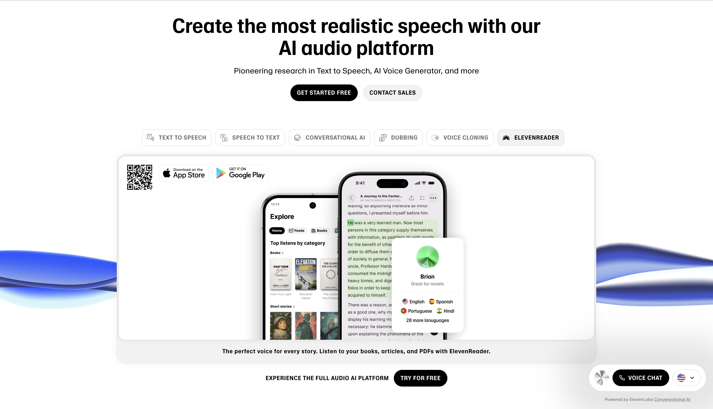

Breaking Boundaries with ElevenLabs: My Journey Through AI Voice Technology
Introduction
As someone deeply interested in the intersection of artificial intelligence, language, and storytelling, I recently explored a groundbreaking platform called ElevenLabs. Marketed as the most realistic AI audio platform, it supports everything from real-time voice cloning to multilingual dubbing. At first, I approached it with curiosity—just to test out a few features. But I was quickly blown away by how powerful, accurate, and intuitive it actually was.
This blog post is a guided tour of my experience using ElevenLabs. I’ll walk you through each major function using real screenshots, explaining what each feature does and how it performed. Whether it was creating a synthetic version of my voice or dubbing my words into another language, the platform constantly impressed me. At the end of the post, I’ll share key takeaways, including the implications this has for creative industries, accessibility, and even ethics.
If you’re a creator, developer, educator, or just someone fascinated by how far AI has come in natural language and audio generation, this is a glimpse into what the future already looks like.
Exploring ElevenLabs Features
1. Text-to-Speech Studio

The foundation of ElevenLabs is its text-to-speech functionality. Here, you type out a script and select a voice that best suits your content. There are voice styles for everything—from advertisements and audiobooks to news delivery and friendly conversations. I tried using the “Brian” voice to narrate a promotional script, and the result sounded incredibly natural. It had pacing, emphasis, and even a touch of personality.
What makes this special is the ability to choose voices that aren’t just generic AI narrators—they’re specialized and emotionally expressive. You can also preview and regenerate results quickly, making this ideal for rapid content creation.
2. Speech-to-Text Transcription
I uploaded a sample audio recording of a fictional interview. ElevenLabs automatically identified individual speakers, labeled each turn of dialogue, and transcribed it flawlessly. The transcription was accurate even with casual or overlapping speech, which makes it a strong tool for professionals who handle interviews, podcasts, or client calls.
Its applications go beyond convenience. Journalists, medical transcriptionists, and corporate teams can benefit from the time saved and the consistency of the output.
3. Conversational AI
ElevenLabs features an interactive voice-based AI system that simulates real-time dialogue through a “Try a Call” interface. You can choose roles like game characters, support agents, or trainers. I tried speaking with a game character named Eric, and the realism was astonishing. The responses were coherent, timely, and appropriately voiced with contextual nuance.
This has massive potential in gaming, training, customer service, and role-based simulations. Developers can build characters that feel alive, support agents that operate 24/7, or tutors that adjust to user queries.
4. Multilingual AI Dubbing
This feature allows users to localize videos into more than 29 languages. You upload a video, and the system not only translates the audio but also synchronizes it with the speaker’s lip movements. I watched a video originally in English dubbed into Hindi, and the result looked and sounded native.
This could revolutionize global media production. Content creators on YouTube, documentary producers, or educators looking to reach multilingual audiences can do so with just a few clicks.
5. Voice Cloning
This is where things went from impressive to extraordinary. I uploaded a short recording of my voice, and ElevenLabs created a perfect synthetic version of it. Within seconds, I had access to a digital replica of my voice that could read anything I typed.
What’s even more impressive is that I used this clone to generate speech in other languages. When I tested it with Chinese text, a native-speaking friend confirmed that the tone and pronunciation were spot on. The voice wasn’t just realistic—it was mine, speaking fluently across linguistic boundaries.
6. ElevenReader

This feature is designed for people who want written content read aloud. You can upload PDFs, news articles, or ebooks and have them narrated by one of the platform’s voices. It’s ideal for audiobook generation, accessible reading, or simply multitasking.
The interface is mobile-friendly, allowing you to carry your digital narrator anywhere. Whether you’re studying for class, digesting long-form journalism, or consuming a novel, this tool makes it frictionless.
7. Text-to-Speech Editor
In this tool, I typed a simple sentence: “Hi, my name is Keiichi Taketsuna.” I selected the voice named Rachel and was able to tweak the delivery instantly. You can regenerate results, change the speaker’s tone, and fine-tune pronunciation and pacing.
This is incredibly useful for anyone creating audio scripts, ads, or product tutorials. It also allows for real-time testing and rapid iteration without going through an audio engineer.
8. Voice Changer
If you have existing audio, ElevenLabs allows you to overlay a new voice on top of it. I uploaded a sample and replaced my voice with Rachel’s. It maintained the emotional expression while completely transforming the speaker’s identity.
It also offers controls for similarity, background noise, and exaggeration. Use cases include character voice creation, anonymity protection, or experimenting with narrative tone in projects.
9. Sound Effects Generator
Beyond voice, the platform also generates professional-grade sound effects. I searched for “Huge Epic Braam”—a classic sound used in trailers—and it produced a perfect audio clip.
This could replace stock libraries for indie game developers, podcast creators, or filmmakers. The generation is fast, customizable, and copyright-safe.
10. Analytics and Voice Agent Tracking
The final screenshot comes from the analytics dashboard. It displays call data for conversational agents, including total duration, success rates, and credits used. This is ideal for tracking the performance of AI agents in customer-facing roles.
For businesses deploying AI voice support, these metrics help improve efficiency, monitor cost, and ensure high service quality.
Key Takeaways and Reflections
Voice Cloning Accuracy Is Surreal
Using just a small sample of my voice, ElevenLabs created a synthetic version that was practically indistinguishable from the real thing. I tested it across multiple scripts and even different languages. When I had it read a Chinese passage, my friend said it sounded exactly like me—and the pronunciation was flawless. That level of precision left me speechless.
Diverse Real-World Applications
What stood out most is how applicable this technology is across industries: - Audiobook creation without needing a human narrator - Game development with fully voiced NPCs - Multilingual film dubbing and content localization - Podcast or video narration at scale - 24/7 support agents for websites or phone systems - Enhanced accessibility for users with visual impairments
This isn’t just about cool technology. It’s about scalability, personalization, and reach.
Ethical and Industry Implications
As exciting as this is, it brings up serious questions. If AI can perfectly replicate human voices, what does that mean for voice actors? How do we protect our vocal identity from misuse? There’s a conversation here that we need to have—about consent, security, and fair use of synthetic voices.
Final Thoughts
Exploring ElevenLabs felt like stepping into the future of human-computer interaction. The voice synthesis was so realistic it blurred the line between digital and organic. From replicating my own voice to narrating texts in languages I don’t even speak, the capabilities felt limitless.
Whether you’re a solo creator, media producer, educator, or software developer, the tools here aren’t just useful—they’re transformative. We’re quickly entering an era where high-quality voiceovers, dubbed content, and synthetic narration will be generated on-demand with just a few clicks.
What amazed me most was how personal it all felt. This wasn’t just a robotic assistant reading lines—it was my voice, my style, my cadence. And now I can use it to tell stories, deliver information, and communicate across borders.